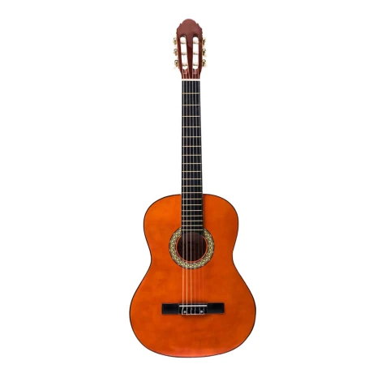
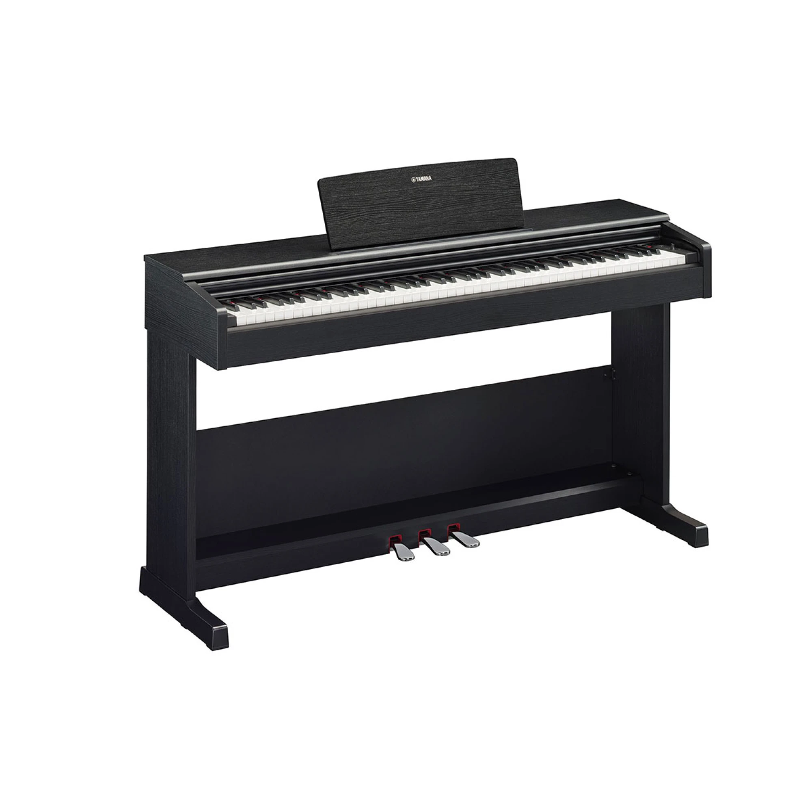
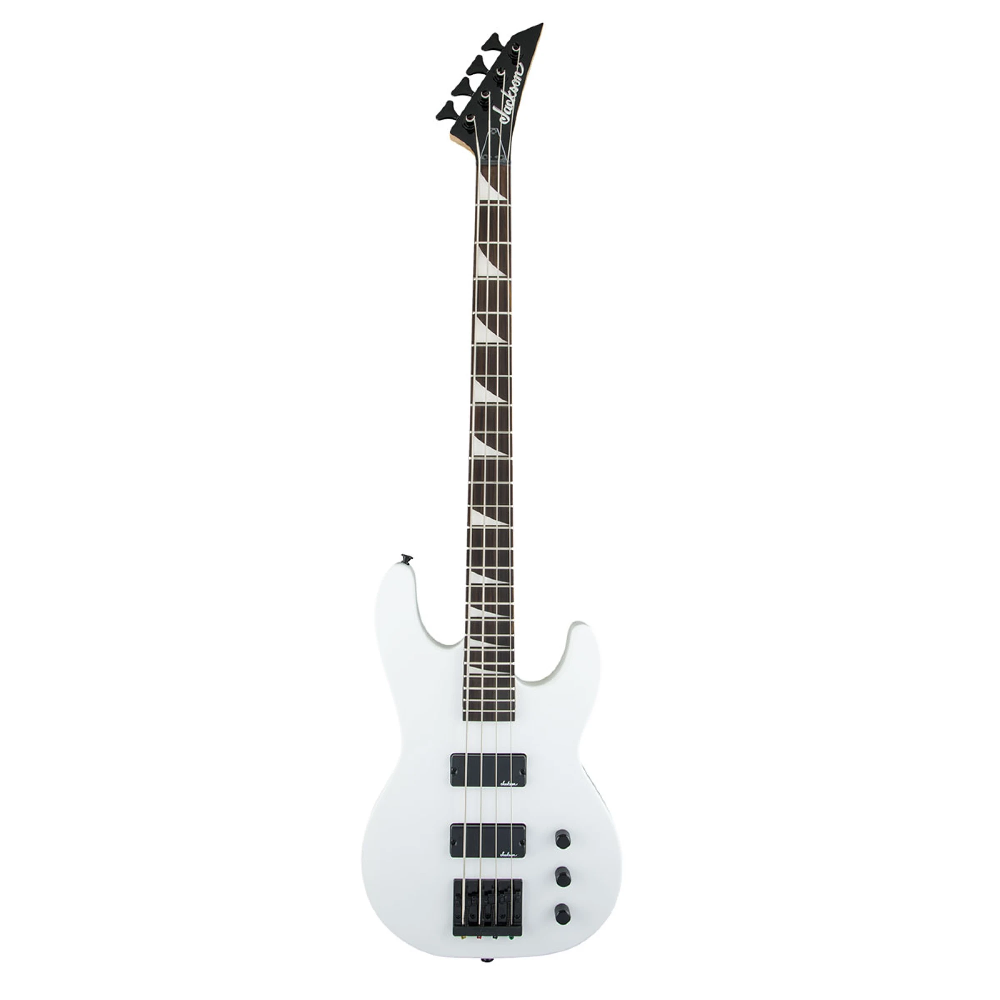
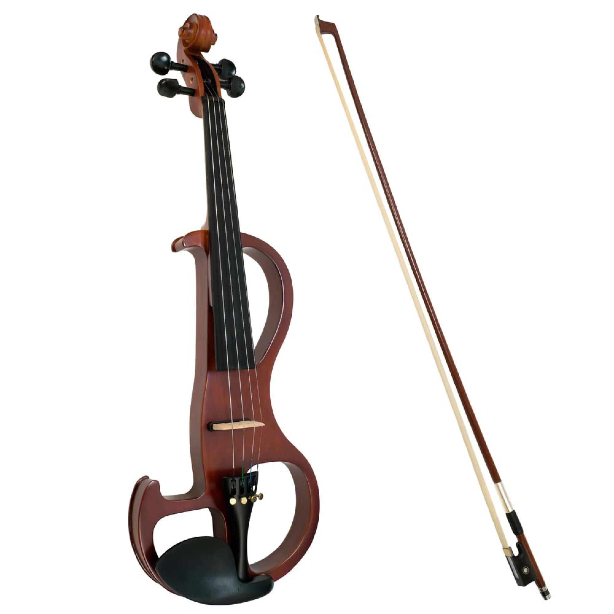

Guitarras
Las guitarras son uno de los instrumentos más populares del mundo. Existen diferentes tipos, como la guitarra acústica, eléctrica y clásica.
Características
-
Tipología:
Acústica, Eléctrica, Clásica -
Materiales:
Madera, Metal, Sintéticos -
Uso:
Solista, Acompañamiento, Bandas
Aprende a Tocar
" frameborder="0" allowfullscreen>También puedes ver más tutoriales en YouTube.
Historia de la Guitarra
La guitarra tiene sus raíces en instrumentos antiguos que datan de miles de años. Ha evolucionado a lo largo del tiempo y se ha adaptado a diferentes géneros musicales.
Recomendaciones
Para principiantes, algunas marcas recomendadas son:
- Yamaha
- Fender
- Gibson
Pianos
El piano es un instrumento de teclado que ha sido parte esencial de la música clásica y contemporánea así como tambien en Composiciones mas modernas hasta el día de hoy.
Características
-
Teclas:
Blancas y negras -
Tipos:
Piano de cola, Piano vertical -
Uso:
Solo, Acompañamiento, Composición
Aprende a Tocar
También puedes ver más tutoriales en YouTube.
Historia del Piano
El piano fue inventado en el siglo XVIII y ha evolucionado en diferentes estilos y formas a lo largo de los años incluso en forma de teclados electronicos que simulan su sonido.
Recomendaciones
Para principiantes, algunas marcas recomendadas son:
- Yamaha
- Kawai
- Roland
Bajos
El bajo es un instrumento de cuerda que se toca mediante el uso de un arco o punteando las cuerdas. Es fundamental en diversos géneros musicales, como el jazz, el rock y la música clásica.
Características
-
Tipo:
Bajo eléctrico, Bajo acústico -
Cuerdas:
4, 5 o 6 cuerdas -
Uso:
Líneas de bajo, Improvisación
Aprende a Tocar
También puedes ver más tutoriales en YouTube.
Historia del Bajo
El bajo ha sido un pilar en la música moderna, evolucionando desde instrumentos como el contrabajo, son la base de la composición y es un instrumento de percusión aún cuando tiene cuerdas.
Recomendaciones
Para principiantes, algunas marcas recomendadas son:
-
Fender
Ibanez
Gibson
Violines
El violín es un instrumento de cuerda que se toca con un arco, muy utilizado en orquestas y música folclórica.
Características
-
Cuerdas:
Cuatro cuerdas -
Materiales:
Madera, Compuestos -
Uso:
Solista, Orquesta, Música de cámara
Aprende a Tocar
También puedes ver más tutoriales en YouTube.
Historia del Violín
El violín ha sido parte de la música clásica desde su invención en el siglo XVI, evolucionando en técnica y estilo.
Recomendaciones
Para principiantes, algunas marcas recomendadas son:
- Yamaha
- Stentor
- Eastman